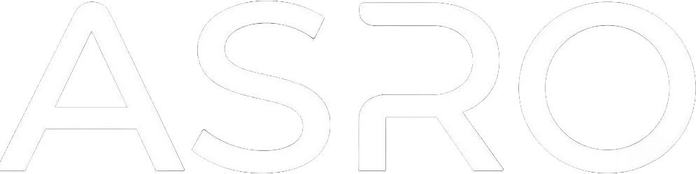

ABOUT / ASRO
日本のために、できることをやる。
ASROは、AI・ソフトウェア・インフラを横断して、新しい選択肢をつくるテクノロジープロジェクト。
便利なものがあるなら使う。でも、「誰かがつくってくれるのを待つ」だけでは終わらない。自分たちが欲しいと思った未来なら、自分たちでつくりにいく。
AIだけをつくるわけでも、Webだけをつくるわけでもない。アイデアを考え、プロダクトにして、それを動かす基盤まで持つ。考えるところから、動き続けるところまで。それがASROのやり方。
ORIGIN / 2026.08.01
2026年8月1日、SORA CLOUDはASROへ名前を変え、同じ日に asro.jp を取得した。
ASROは「SORA」の文字を組み替えた名前。そして、その響きには「明日」へ進む意味も重ねている。
名前を変えたのは、見た目だけを変えるためじゃない。AI、ソフトウェア、インフラを一つのブランドとして育て、もっと大きな未来をつくっていくためのスタートだった。
WHY WE BUILD
ASROは、最初から何でも持っているプロジェクトじゃない。
だからこそ、必要なものを一つずつつくる。できない理由より、どうしたらできるかを考える。
「日本のために、できることをやる。」を、言葉だけで終わらせず、動くものにしていく。
THREE DIVISIONS
「普通はこう」を、そのまま受け入れない。
アイデアを、実際に触れて使えるものへ。
完成で止まらず、何度でも変えていく。
答えを固定するためじゃない。もっと良いものを探し続けるための問い。
ASRO HOME →